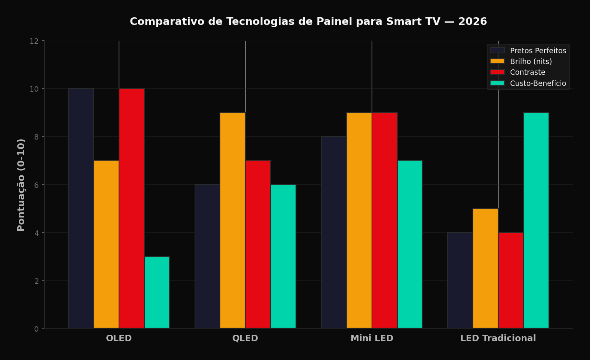
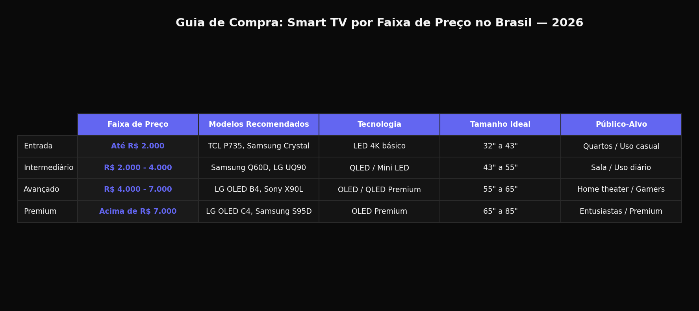

Escolher uma Smart TV em 2026 pode ser uma tarefa desafiadora. Com tantas opcoes no mercado, desde modelos basicos de 32 polegadas ate TVs premium de 85 polegadas com tecnologia OLED, e facil se perder entre especificacoes tecnicas e marketing. Neste guia completo, vamos descomplicar cada aspecto importante para que voce faca a melhor escolha para o seu orcamento e necessidades.
Comparativo de Tecnologias de Painel
A escolha do painel e a decisao mais importante na compra de uma Smart TV. Veja o comparativo visual das quatro principais tecnologias disponiveis em 2026:

Resolucao: 4K e o Padrao, 8K Ainda e Luxo
Em 2026, a resolucao 4K (Ultra HD) tornou-se o padrao minimo para qualquer Smart TV decente. Com 3840x2160 pixels, o 4K oferece quatro vezes mais detalhes que o Full HD, resultado visivel especialmente em telas acima de 50 polegadas.
O 8K (7680x4320 pixels) continua sendo um nicho de mercado em 2026. Embora as TVs 8K estejam disponiveis, o conteudo nativo ainda e escasso e o preco premium nao se justifica para a maioria dos consumidores. Investir em uma boa TV 4K com tecnologia de upscaling avancado e mais sensato.
Para salas pequenas ou uso como monitor, uma TV 43 polegadas 4K e suficiente. Salas medianas se beneficiam de 55 a 65 polegadas, enquanto home theaters pedem 75 polegadas ou mais.
Tecnologia de Painel: OLED vs QLED vs Mini LED
OLED (Organic Light Emitting Diode) continua sendo o rei da qualidade de imagem em 2026. Cada pixel emite sua propria luz, permitindo pretos perfeitos e contraste infinito. As TVs OLED da LG, Sony e Samsung oferecem a melhor experiencia cinematografica.
QLED (Quantum Dot LED) da Samsung e TCL usa pontos quanticos para ampliar a gama de cores. Embora nao alcance os pretos perfeitos do OLED, oferece brilho superior, ideal para salas bem iluminadas.
Mini LED representa o meio-termo em 2026. Usando milhares de mini LEDs para iluminacao local, oferece contraste proximo ao OLED com brilho superior. Marcas como TCL, Hisense e ate a Samsung (Neo QLED) investem fortemente nesta tecnologia.
Sistema Operacional: Tizen, webOS, Android TV
O sistema operacional define sua experiencia diaria. Em 2026, as principais opcoes sao: Tizen (Samsung), webOS (LG), Google TV/Android TV (Sony, TCL, Philips) e Roku (alguns modelos AOC e Semp).
O Google TV se destaca pela integracao com o ecossistema Google, busca universal e vasta biblioteca de apps. A interface e intuitiva e recebe atualizacoes frequentes. O Tizen da Samsung e rapido e bem otimizado, com excelente suporte a apps brasileiros.
O webOS da LG e elegante e o Magic Remote e um diferencial. Verifique se o sistema oferece os apps que voce usa: Netflix, Prime Video, Disney+, Globoplay, HBO Max e YouTube sao essenciais no Brasil.
Taxa de Atualizacao: 60Hz vs 120Hz
A taxa de atualizacao mede quantas vezes a tela atualiza por segundo. Em 2026, 60Hz e o padrao basico, suficiente para filmes, series e TV aberta. Para jogos e esportes, 120Hz oferece movimento mais fluido.
Gamers devem priorizar TVs com 120Hz, VRR (Variable Refresh Rate) e modo de baixa latencia. As TVs de 2026 com HDMI 2.1 suportam 4K a 120Hz, essencial para PlayStation 5 e Xbox Series X.
Para uso geral, 60Hz e perfeitamente adequado. A diferenca entre 60Hz e 120Hz em filmes e series e sutil e muitas vezes imperceptivel para o olho casual.
HDR: Dolby Vision, HDR10+, HLG
HDR (High Dynamic Range) expande a faixa de brilho e cores, criando imagens mais realistas. Em 2026, Dolby Vision e o padrao premium, oferecendo metadados dinamicos que ajustam a imagem cena por cena.
HDR10+ e a alternativa da Samsung, tambem com metadados dinamicos. A maioria das plataformas de streaming suporta ambos. HLG e usado em transmissoes ao vivo e e menos relevante para streaming.
Verifique se a TV oferece brilho minimo de 400 nits para HDR decente. Para experiencia HDR premium, busque 1000+ nits. TVs OLED alcancam isso em highlights, enquanto Mini LED e QLED oferecem brilho sustentado mais alto.
Conectividade: HDMI 2.1, Wi-Fi 6, Bluetooth
Em 2026, HDMI 2.1 e essencial para futuro-proofing. Suporta 4K a 120Hz, eARC para soundbars avancados e VRR para jogos. Verifique se a TV tem pelo menos duas portas HDMI 2.1.
Wi-Fi 6 (802.11ax) oferece velocidade e estabilidade superiores para streaming 4K. Embora Wi-Fi 5 ainda funcione, o Wi-Fi 6 reduz buffering e melhora a experiencia em redes congestionadas.
Bluetooth 5.0 ou superior permite conectar fones de ouvido sem fio para assistir silenciosamente. USB 3.0 e util para reproducao de midia externa, embora o streaming seja o metodo principal em 2026.
Recomendacoes por Faixa de Preco
Confira nossa tabela de recomendacoes organizada por orcamento:

Ate R$ 2.000: TCL P735 ou Samsung Crystal UHD. Oferecem 4K basico, sistemas operacionais decentes e apps principais. Ideais para quartos ou uso casual.
R$ 2.000 a R$ 4.000: Samsung Q60D, LG UQ90 ou TCL C735. QLED/Mini LED de entrada com melhor qualidade de imagem, 120Hz e mais portas HDMI 2.1.
R$ 4.000 a R$ 7.000: LG OLED B4, Samsung Q80D ou Sony X90L. OLED de entrada ou QLED premium. Melhor contraste, processamento de imagem superior e build quality.
Acima de R$ 7.000: LG OLED C4/G4, Samsung S90D/S95D ou Sony A80L. OLED premium com brilho melhorado, processadores Alpha ou Neural, design premium e audio superior.